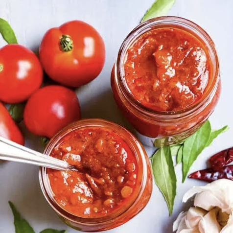

Telugu Ruchulu
తెలుగు రుచులు
TomatoPickle/
టమోటాఉరగాయ
Home Page
Click to change the language
తెలుగు కోసం క్లిక్ చేయండి
Ingredients:
500g ripe tomatoes (chopped)
2 tbsp red chili powder
1 tbsp turmeric powder
1 tbsp mustard seeds
1 tbsp fenugreek seeds (methi)
2 tbsp salt (adjust to taste)
5-6 garlic cloves (chopped)
½ cup mustard oil
1 tbsp vinegar or lemon juice (for preservation)

Instructions:
Prepare Tomatoes
Wash and chop the tomatoes. Let them dry for some time to remove excess moisture.
Cook Tomatoes –
Heat 2 tbsp mustard oil in a pan, add tomatoes, and cook until they turn soft and water reduces.
Roast & Grind Spices –
Dry roast mustard and fenugreek seeds, grind them coarsely, and mix with chili powder and turmeric.
Mix & Cook –
Add the spice mix, salt, and remaining mustard oil to the tomatoes. Stir well and cook until oil separates.
Cool & Store –
Once cooled, add vinegar or lemon juice, mix well, and store in a sterilized jar.
Tip
కావలసినవిః
500 గ్రా పండిన టమోటాలు (తరిగిన)
2 టేబుల్ స్పూన్లు ఎర్ర మిరప పొడి
1 టేబుల్ స్పూన్ పసుపు పొడి
1 టేబుల్ స్పూన్ ఆవాలు
1 టేబుల్ స్పూన్ మెంతి గింజలు (మేతి)
2 టేబుల్ స్పూన్లు ఉప్పు (రుచికి సర్దుబాటు చేయండి)
5-6 వెల్లుల్లి రెబ్బలు (తరిగిన)
½ కప్పు ఆవాల నూనె
1 టేబుల్ స్పూన్ నిమ్మరసం (సంరక్షణ కోసం)
టమోటాలు సిద్ధం -
టమోటాలు కడగడం మరియు గొడ్డలితో నరకడం. అదనపు తేమను తొలగించడానికి వాటిని కొంతకాలం పొడిగా ఉంచండి.
టొమాటోలను ఉడికించాలి -
పాన్లో 2 టేబుల్ స్పూన్ల ఆవాల నూనె వేడి చేసి, టొమాటోలు వేసి, అవి మెత్తగా మరియు నీరు తగ్గే వరకు ఉడికించాలి.
రోస్ట్ & గ్రైండ్ మసాలాలు -
పొడి రోస్ట్ ఆవాలు మరియు మెంతి గింజలు, వాటిని మెత్తగా రుబ్బు, మరియు కారం పొడి మరియు పసుపు కలపాలి
మిక్స్ & కుక్ -
టొమాటోలకు మసాలా మిక్స్, ఉప్పు మరియు మిగిలిన ఆవాల నూనె జోడించండి. బాగా కదిలించు మరియు నూనె విడిపోయే వరకు ఉడికించాలి
కూల్ & స్టోర్ -
చల్లబడిన తర్వాత, వెనిగర్ లేదా నిమ్మరసం వేసి, బాగా కలపండి మరియు స్టెరిలైజ్ చేసిన కూజాలో నిల్వ చేయండి.
చిట్కా